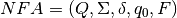
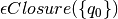

2. Finite Automata¶
Read all of chapter 2 from Peter Linz’s text, “Formal Languages and Automata”, fifth edition.
2.1. The Ordered Collections¶
Many of the programs you will write in this course require you to use sets and maps (i.e. dictionaries). As of Python 3.3 the built-in set and dictionary types non-deterministically iterate over their items. None of the algorithms presented here rely on the ordering of items within a set or a dictionary. However, when debugging your code you may want to run your program, then make a modification and run it again to see what happens. But, an ordinary dictionary or set will return a completely different ordering of the items within it, making debugging difficult.
The OrderedMap, OrderedSet, and OrderedFrozenSet classes provided here require an ordering of the keys or items stored in them. However, they also deterministically iterate over those items and keys, returning them in ascending sorted order. You may wish to use these classes in your code. You can save these classes in a file called orderedcollections.py. Then it can be imported for use in your code in the usual way.
1 2 3 4 5 6 7 8 9 10 11 12 13 14 15 16 17 18 19 20 | class OrderedMap(dict):
def __init__(self,*args,**kwargs):
super().__init__(*args, **kwargs)
def __iter__(self):
return iter(sorted(super().__iter__()))
class OrderedSet(set):
def __init__(self,lst=[]):
super().__init__(lst)
def __iter__(self):
return iter(sorted(super().__iter__()))
class OrderedFrozenSet(frozenset):
def __init__(self,lst=[]):
self = frozenset(lst)
def __iter__(self):
return iter(sorted(super().__iter__()))
|
2.2. The State Class¶
The finite state automata in chapter 2 can be modeled with a State class that can be used to construct finite state automata. In the state class below there are classes that are referred to. The classes define classes of characters. For instance, the class letter could be used to represent all characters that are letters, as in a..z and A..Z. So, the classes is a dictionary of class names like letter to sets of ASCII values (i.e. integers). For instance the class letter would map to the set of values 65..90 and 97..122 for all the letters from A to Z, both small and captital. When you build an automaton you should also build this dictionary of classes.
1 2 3 4 5 6 7 8 9 10 11 12 13 14 15 16 17 18 19 20 21 22 23 24 25 26 27 28 29 30 31 32 33 34 35 36 37 38 39 40 41 42 43 44 45 46 47 48 49 50 51 52 53 54 55 56 57 58 59 60 61 62 63 64 65 66 67 68 69 70 71 72 73 74 75 76 | NoTransition = -1
class State:
def __init__(self, id, acceptsTokenId = None, transitions = {}):
# An id of -1 is not allowed since that indicates there is
# no transition on a value.
if id == -1:
raise Exception("A state id of -1 is not allowed.")
self.id = id
# A copy of the list of transitions needs to be created
# because Python makes only one instance of a default
# parameter. Changing the list later, by adding a transition
# would add that transition to every state. Wow! Talk about
# bad semantics...
self.transitions = dict(transitions)
self.acceptsTokenId = acceptsTokenId
# This will cause onGoTo to generate an Exception if called
# before the setClasses method is called.
self.classes = None
def setClasses(self, classes):
self.classes = classes
def addTransition(self, onClass, toState):
if onClass in self.transitions:
raise Exception("Duplicate Transition " + str(onClass) + ". Consider using NFA State instead.")
self.transitions[onClass] = toState
def hasTransition(self, onClass):
return onClass in self.transitions
def onClassGoTo(self, onClass):
if self.hasTransition(onClass):
return self.transitions[onClass]
return NoTransition
# You must call setClasses before calling the onGoTo method.
def onGoTo(self, on):
for aClass in self.transitions:
if on in self.classes[aClass]:
return self.transitions[aClass]
return NoTransition
def getTransitions(self):
return self.transitions
def getId(self):
return self.id
def setAccepting(self, tokenId):
self.acceptsTokenId = tokenId
def isAccepting(self):
return self.acceptsTokenId != None
def getAcceptsTokenId(self):
return self.acceptsTokenId
def __repr__(self):
return "State(" + repr(self.id) + "," + repr(self.acceptsTokenId) + "," + \
repr(self.transitions) + ")"
def __str__(self):
val = ""
val = "State " + str(self.id) + "\n"
if self.acceptsTokenId != None:
val += " accepts token with identifier: " + str(self.acceptsTokenId) + "\n"
for onClass in self.transitions:
val += " On " + str(onClass) + " Go To " + str(self.transitions[onClass]) + "\n"
return val
|
Fig. 2.1: The Automata State Class - state.py
2.3. JPython Programming Language Example¶
JPython is a simple programming language similar to Python, but with some Java syntax thrown in. Here is a sample program from this language.
1 2 3 4 5 6 7 8 9 10 11 12 13 14 15 16 17 18 19 20 21 22 23 24 25 26 27 28 | # In JPython you can declare functions and variables.
# Functions are declared/defined with a def keyword.
def factorial(n) {
if (n == 0)
return 1;
# This involves a recursive call. Statements are
# terminated with semicolons.
return n * factorial(n-1);
}
def iterativeFactorial(n) {
# The decl is to declare a local variable.
decl result = 1;
for i in range(1,n+1) {
result = result * i;
}
return result;
}
def main() {
print("The factorial of 5 is", factorial(5));
print('The iterative factorial of 5 is', iterativeFactorial(5));
}
main();
|
Fig. 2.2: JPython Sample Program - sample.jpy
2.4. The StreamReader Class¶
This is the StreamReader class which is useful in reading input and parsing it.
1 2 3 4 5 6 7 8 9 10 11 12 13 14 15 16 17 18 19 20 21 22 23 24 25 26 27 28 29 30 31 32 33 34 35 36 37 38 39 40 41 42 43 44 45 46 47 48 49 50 51 52 53 54 55 56 57 58 59 60 61 62 63 64 65 66 67 68 69 70 71 72 73 74 75 76 77 78 79 80 81 82 83 84 85 86 87 88 89 90 91 92 93 94 95 96 97 98 99 100 101 102 103 104 105 106 107 108 109 110 111 112 113 114 115 116 117 118 119 120 121 122 123 124 125 126 127 128 129 130 131 132 133 134 135 136 137 138 139 140 141 142 143 144 145 146 147 148 149 150 151 152 153 154 155 156 157 158 159 160 161 162 163 164 165 166 167 168 169 170 171 172 173 174 175 176 177 178 179 180 181 182 | EOF = 3
digits = set(list("0123456789"))
lettersdigitsunderscore = set(list("abcdefghijklmnopqrstuvwxyzABCDEFGHIJKLMNOPQRSTUVWXYZ_0123456789"))
letters = set(list("abcdefghijklmnopqrstuvwxyzABCDEFGHIJKLMNOPQRSTUVWXYZ"))
ws = set(list(" \t\n\r"))
badidentifiertoken = 1
notAChar = 2
class StreamReader:
def __init__(self, instream):
self.instream = instream
self.nextChars = ""
self.EOF = False
self.line = 1
self.column = 0
self.charsRead = 0
def readChar(self):
if len(self.nextChars) > 0:
nextChar = self.nextChars[0]
self.nextChars = self.nextChars[1:]
else:
nextChar = self.instream.read(1)
if nextChar == "":
nextChar = chr(EOF)
elif nextChar == '\n':
self.line+=1
self.column = 0
else:
self.column+=1
if nextChar == chr(EOF):
self.EOF = True
self.charsRead += 1
return nextChar
def unreadChar(self, ch):
if len(ch) == 0:
return
if len(ch) != 1:
raise Exception(notAChar)
self.EOF = False
self.nextChars = ch + self.nextChars
if ch == '\n':
self.line-=1
else:
self.column-=1
self.charsRead -= 1
def numCharsRead(self):
# return the number of characters read. This is useful when backtracking is performed
# in case no progress is being made in reading the stream.
return self.charsRead
def eof(self):
return self.EOF
def readUpTo(self, delimiter):
result = ""
done = False
while not done and not self.eof():
c = self.readChar()
if not self.eof():
result += c
if result[-len(delimiter):] == delimiter:
done = True
return result
def readInt(self):
number = ""
self.skipWhiteSpace()
digit = self.readChar()
while digit in digits:
number += digit
digit = self.readChar()
self.unreadChar(digit)
return int(number)
def readIdentifier(self):
id = ""
self.skipWhiteSpace()
c = self.readChar()
if not c in letters:
print("Bad identifier token found in source file starting with", c, "at line", self.line, "and column", self.column)
raise Exception(badidentifiertoken)
while c in lettersdigitsunderscore:
id += c
c = self.readChar()
self.unreadChar(c)
return id
def skipWhiteSpace(self):
c = self.readChar()
while c in ws:
c = self.readChar()
self.unreadChar(c)
def peek(self, value):
# Skip white space, then look for the value as the next characters in the input file.
# Remember the read characters, but return true if they are found and false otherwise.
readChars = ""
self.skipWhiteSpace()
done = False
while len(readChars) < len(value) and not done:
c = self.readChar()
if c == EOF:
done = True
else:
readChars += c
for i in range(len(readChars)-1,-1,-1):
self.unreadChar(readChars[i])
if readChars == value:
return True
return False
def skipComments(self):
# skip comments
while self.peek("(*"):
self.readUpTo("*)")
def getLineNumber(self):
return self.line
def getColNumber(self):
return self.column
def getToken(self):
self.skipWhiteSpace()
c = self.readChar()
if c in digits:
self.unreadChar(c)
return self.readInt()
if c in letters:
self.unreadChar(c)
return self.readIdentifier()
return c
|
Fig. 2.3: The StreamReader Class - streamreader.py
2.5. An NFA Example¶
This section presents an an NFA (a non-deterministic finite statement machine) implementation as an example only. Because of its non-deterministic nature, it uses backtracking search to determine if a string is accepted by the machine or not. NOTE that null transitions are denoted as epsilon and not lambda.
To implement this example, the NFA state must be defined because the transition function of a non-deterministic machine takes a state and an input symbol and returns a set of states.
1 2 3 4 5 6 7 8 9 10 11 12 13 14 15 16 17 18 19 20 21 22 23 24 25 26 27 28 29 30 31 32 33 34 35 36 37 38 39 40 41 42 43 44 45 46 47 48 49 50 51 52 53 54 55 56 57 58 59 60 61 62 63 64 65 66 67 68 69 70 71 72 73 74 75 76 77 | class NFAState:
def __init__(self, id, acceptsTokenId = None, transitions = {}):
# An id of -1 is not allowed since that indicates there is
# no transition on a value.
if id == -1:
raise Exception("A state id of -1 is not allowed.")
self.id = id
# A copy of the list of transitions needs to be created
# because Python makes only one instance of a default
# parameter. Changing the list later, by adding a transition
# would add that transition to every state. Wow! Talk about
# bad semantics...
self.transitions = dict(transitions)
self.acceptsTokenId = acceptsTokenId
# This will cause onGoTo to generate an Exception if called
# before the setClasses method is called.
self.classes = None
def setClasses(self, classes):
self.classes = classes
def addTransition(self, onClass, toStateId):
if onClass in self.transitions:
self.transitions[onClass].add(toStateId)
else:
self.transitions[onClass] = set([toStateId])
def hasTransition(self, onClass):
return onClass in self.transitions
def onClassGoTo(self, onClass):
if onClass in self.transitions:
return self.transitions[onClass]
return set([])
# You must call setClasses before calling the onGoTo method.
def onGoTo(self, on):
for aClass in self.transitions:
if on in self.classes[aClass]:
return self.transitions[aClass]
return set([])
def getTransitions(self):
return self.transitions
def getId(self):
return self.id
def setAccepting(self, tokenId):
self.acceptsTokenId = tokenId
def isAccepting(self):
return self.acceptsTokenId != None
def getAcceptsTokenId(self):
return self.acceptsTokenId
def __repr__(self):
return "NFAState(" + repr(self.id) + "," + repr(self.acceptsTokenId) + "," + \
repr(self.transitions) + ")"
def __str__(self):
val = ""
val = "NFAState " + str(self.id) + "\n"
if self.acceptsTokenId != None:
val += " accepts token with identifier: " + str(self.acceptsTokenId) + "\n"
for onClass in self.transitions:
for toStateId in self.transitions[onClass]:
val += " On " + str(on) + " Go To " + str(toStateId) + "\n"
return val
|
Fig. 2.4: The NFA State Class
The code in figure 2.5 completes the NFA example code. It employs recursive backtracking through the acceptsSuffix function. Notice that when onGoTo and onClassGoTo are called that a set of state ids is returned, even if there is only one state in the set.
1 2 3 4 5 6 7 8 9 10 11 12 13 14 15 16 17 18 19 20 21 22 23 24 25 26 27 28 29 30 31 32 33 34 35 36 37 38 39 40 41 42 43 44 45 46 47 48 49 50 51 52 53 54 55 56 57 58 59 60 61 62 63 64 65 66 67 68 69 70 71 72 73 74 75 76 77 78 79 80 81 82 83 84 85 86 87 88 89 90 91 92 93 94 95 96 97 98 99 100 101 102 103 104 105 106 107 108 109 110 111 112 113 114 115 116 117 118 119 120 121 122 | import nfastate
import io
import streamreader
# This NFAStateMachine demonstrates backtracking search while trying
# to find a means of accepting a string of characters. The NFA allows
# the use of "epsilon" transitions and cycles of "epsilon" transitions.
# It avoids getting stuck in a cycle by keeping track of visited
# "states". The state of the NFA is determined not only by the nfa
# state it is in, but also by the state of the stream it is reading.
# A cycle occurs when a state is visited twice with the same number
# of characters read from the stream.
class NFAStateMachine:
def __init__(self, states, startStateId, classes):
self.states = states
self.startStateId = startStateId
self.classes = classes
for stateId in self.states:
self.states[stateId].setClasses(classes)
def accepts(self, strm):
# The accepts method uses a recursive acceptsSuffix
# which starts in the given state (not necessarily the
# start state) and recursively uses search with backtracking
# to try to find a final state with all of the input consumed.
# If it is successful on this path then it returns True and if
# not it returns False to continue to backtrack and look for
# another path to a final state.
def acceptsSuffix(stateId):
#print("trying", stateId, "with", strm.numCharsRead(), "characters read")
# If we are not making any progress, we must backtrack.
if (stateId, strm.numCharsRead()) in visited:
#print("backtracking from", stateId, "already visited")
return False
# Otherwise, add the (stateId, number of characters read) to the
# set of visited states.
visited.add((stateId, strm.numCharsRead()))
theState = self.states[stateId]
# Check that we are not at end of file and in an accepting state.
c = strm.readChar()
if strm.eof() and theState.isAccepting():
#print(stateId)
return True
strm.unreadChar(c)
for onClass in theState.getTransitions():
toStateIds = theState.getTransitions()[onClass]
if onClass == "epsilon":
for toStateId in toStateIds:
if acceptsSuffix(toStateId):
#print(stateId)
return True
else: # onClass is not an epsilon transition
c = strm.readChar()
for toStateId in toStateIds:
if c in self.classes[onClass] and acceptsSuffix(toStateId):
#print(stateId)
return True
strm.unreadChar(c)
#print("backtracking from", stateId)
return False
# This set will take care of keeping track of all traversed
# states and characters read from the stream. If progress is
# not made, then we must backtrack.
visited = set()
# Beginning of accepts function body - We call acceptsSuffix
# initially starting from the start state.
return acceptsSuffix(self.startStateId)
def main():
q0 = nfastate.NFAState(0)
q1 = nfastate.NFAState(1,1)
q2 = nfastate.NFAState(2)
classes = {"zero":frozenset(["0"]), "one":frozenset(["1"]), "epsilon":frozenset([])}
q0.addTransition("zero", 1)
q0.addTransition("one", 1)
q1.addTransition("zero", 0)
q1.addTransition("one",1)
q1.addTransition("zero",2)
q2.addTransition("epsilon", 0)
q0.addTransition("epsilon", 2)
q2.addTransition("one",1)
nfa = NFAStateMachine({0:q0, 1:q1, 2:q2}, 0, classes)
done = False
s = input("Please enter a string of zeros and ones (type done to quit): ").strip()
while s!="done":
strm = streamreader.StreamReader(io.StringIO(s))
if nfa.accepts(strm):
print("The string is accepted by the finite state machine.")
else:
print("The string is not accepted.")
s = input("Please enter a string of zeros and ones (type done to quit): ").strip()
print("Program Completed.")
if __name__=="__main__":
main()
|
Fig. 2.5: An NFA Example
2.6. A Scangen Input File¶
Here is a Scangen input file for the JPython programming language.
1 2 3 4 5 6 7 8 9 10 11 12 13 14 15 16 17 18 19 20 21 22 23 24 25 26 27 28 29 30 31 32 33 34 35 36 37 38 39 40 41 42 43 44 45 46 47 48 49 50 51 52 53 54 55 56 57 58 59 60 61 62 63 64 65 66 67 68 69 70 71 72 73 74 75 76 77 78 79 80 81 82 83 84 85 86 87 88 89 90 91 92 93 94 95 96 97 98 99 100 101 102 103 104 105 106 107 108 109 110 111 112 113 114 115 116 117 118 119 120 121 122 123 124 125 126 127 128 129 130 131 132 133 134 135 136 137 138 139 140 141 142 143 144 145 146 147 148 149 150 151 152 153 154 155 156 157 158 159 160 161 162 163 164 165 166 167 168 169 170 171 172 173 174 175 176 177 178 179 180 181 182 183 184 185 186 187 188 189 190 191 192 193 194 195 196 197 198 199 200 201 202 203 204 205 206 207 208 209 210 211 212 213 214 215 216 217 218 219 220 221 222 223 224 225 226 227 228 | (* This a sample input file for the scangen.py program. The
program reads an input file like this one and produces a
scanner which is capable of tokenizing the input for the
programming language defined in this file. For instance,
this file defines the programming language for a variant
of Python I have called JPython. It is a combination of
Java and Python.
Here is a sample program from that language.
# In JPython you can declare functions and variables.
# Functions are declared/defined with a def keyword.
def factorial(n) {
if (n == 0)
return 1;
# This involves a recursive call. Statements are
# terminated with semicolons.
return n * factorial(n-1);
}
def iterativeFactorial(n) {
# The decl is to declare a local variable.
decl result = 1;
for i in range(1,n+1) {
result = result * i;
}
return result;
}
def main() {
print("The factorial of 5 is", factorial(5));
print('The iterative factorial of 5 is', iterativeFactorial(5));
}
*)
(* Comments for the scangen input file appear
within paren asterisk pairs as shown here. *)
#CLASSES
(* The classes defines classes of ASCII character codes. All
supported variants of the class definitions are shown here.
The ^ operator means that the class includes all ASCII
codes (i.e. 0 to 255) that are NOT the given character
codes. The names of the classes below describe their
true nature.
*)
anycharbutnewline = ^10..13;
anycharbutquote = ^39;
anycharbutdoublequote = ^'"';
quote = 39;
doublequote = '"';
pound = '#';
letter = 'A'..'Z', 'a'..'z';
digit = '0'..'9';
EOF = 3;
#KEYWORDS
(* Keywords are optional but define the identifier tokens that should
be recognized as keywords and not identifiers.
The number is a token identifier that may be used instead of the actual
string to identify the keyword. Constants like the name def_keyword
are defined by scangen for each keyword identifier in the generated scanner.
Tokens print, range, True, False are all bindings that exist during code
generation so are not recognized as keywords.
*)
'def';
'if';
'while';
'len';
'and';
'not';
'or';
'return';
'in';
'None';
'for';
'else';
'decl';
'True';
'False';
#TOKENS
(* The identifier token must be the first token defined in this list for the keyword
definitions given above.
The token identifier numbers also have constants defined for them like the name
identifier_token for instance. These names are created by the scangen program in the
generated scanner.
The name "comment" is a special name. If used, it represents comments that are to be
ignored by the scanner. Comment tokens are filtered out by the generated scanner.
*)
identifier = letter.(letter|digit)*;
integer = digit.digit*;
'>=';
'<=';
'==';
'!=';
'>';
'<';
'=';
'(';
')';
'+';
'-';
'*';
'/';
'[';
']';
'{';
'}';
',';
';';
stringconst = (quote . anycharbutquote* . quote) | (doublequote . anycharbutdoublequote* . doublequote);
comment = pound . anycharbutnewline*;
endoffile = EOF;
#DEFINITIONS
from jpythonbackend import *
#PRODUCTIONS
Program ::= Block endoffile (JBlock(Block));
Block ::= FunDecs VarDecs Statements ((FunDecs,VarDecs,Statements));
FunDecs ::= null ([]);
| 'def' identifier '(' ArgList ')' CompoundStmt FunDecs ([JFundec(identifier, ArgList,CompoundStatement)]+FunDecs);
VarDecs ::= null ([]);
| 'decl' identifier ';' VarDecs ([JDecl(identifier)]+VarDecs);
Statements ::= null ([]);
| TerminatedStatement Statements ([TerminatedStatement]+Statements);
TerminatedStatement ::= Statement ';' (Statement);
CompoundStmt ::= '{' Block '}' (JBlock(Block));
Statement ::= AssignmentStmt (AssignmentStmt);
| ReturnStmt (ReturnStmt);
| IfStmt (IfStmt);
| WhileStmt (WhileStmt);
| ForStmt (ForStmt);
| CompoundStmt (CompoundStmt);
AssignmentStmt ::= identifier '=' Expression (JAssign(identifier,Expression));
ReturnStmt ::= 'return' OptionalExpression (JReturn(OptionalExpression));
OptionalExpression ::= null (None);
| Expression (Expression);
IfStmt ::= 'if' '(' Expression ')' Statement OptionalElse (If(Expression,Statement,OptionalElse));
OptionalElse ::= null (Pass);
| 'else' Statement (Statement);
WhileStmt ::= 'while' '(' Expression ')' Statement (While(Expression,Statement));
ForStmt ::= 'for' identifier 'in' Expression Statement (For(identifier,Expression,Statement));
Expression ::= Expression 'or' AndExpression (OrExpr(Expression,AndExpression));
| AndExpression (AndExpression);
AndExpression ::= AndExpression 'and' NotExpression (AndExpr(AndExpression,NotExpression));
| NotExpression (NotExpression);
NotExpression ::= 'not' RelExpression (NotExpr(RelExpression));
| RelExpression (RelExpression);
RelExpression ::= NumExpression RelOp NumExpression (relexpr(RelOp,NumExpression1,NumExpression2));
| NumExpression (NumExpression);
RelOp ::= '>=' ('>=');
| '<=' ('<=');
| '>' ('>');
| '<' ('<');
| '==' ('==');
| '!=' ('!=');
NumExpression ::= NumExpression '+' Term (AddExpr(NumExpression,Term));
| NumExpression '-' Term (SubExpr(NumExpression,Term));
| Term (Term);
Term ::= Term '*' Factor (mulexpr(Term,Factor));
| Term '/' Factor (divexpr(Term,Factor));
| Factor (Factor);
Factor ::= identifier (identexpr(identifier));
| integer (intexpr(integer));
| FunCall (FunCall);
| '(' ExpressionList ')' (tuple(ExpressionList));
| 'True' (boolexpr(True));
| 'False' (boolexpr(False));
| stringconst (strexpr(stringconst));
FunCall ::= identifier '(' ArgList ')' (funcall(identifier,ArgList));
ArgList ::= null ([]);
| ExpressionList (ExpressionList);
ExpressionList ::= Expression ([Expression]);
| Expression comma ExpressionList ([Expression]+ExpressionList);
IdentList ::= identifier ([identifier]);
| identifier ',' IdentList ([identifier]+IdentList);
#END
|
Fig. 2.6: A Scangen Input File - jpython.txt
2.7. NFA to DFA Conversion¶
This is slight variation of the algorithm presented on page 59 of Linz, 5th edition.
2.7.1. The Function¶
In this version of the algorithm we define a function called that given a set of states of an NFA returns the set of states that can be reached on epsilon transitions from the given set of states.
The closure set can be computed by starting with a stack of the given set of states. Then the stack is repeatedly popped until it is empty. Each time a state is popped any states that can be reached from the popped state on an  transition, and that are not yet in the closure set, are pushed onto the stack and added to the closure set. Once the stack is emptied there are no more reachable states from the original given set of states and the -closed set is returned.
transition, and that are not yet in the closure set, are pushed onto the stack and added to the closure set. Once the stack is emptied there are no more reachable states from the original given set of states and the -closed set is returned.
2.7.2. The NFA to DFA Algorithm¶
For  we can form a DFA by starting with  as the start state of the DFA. We may wish to simply make a mapping from a DFA state id to the set of NFA states it represents and another mapping from NFA state sets to the DFA state it represents. For the mapping from NFA state sets to DFA states you will need to use frozenset in Python because only immutable values may be used as keys in a dictionary. We put this DFA state on a stack of unexplored states.
To complete the DFA we do the following:
- We pop a DFA state from the stack of unexplored states.
- We form a new set of NFA states as described in step 2 of the algorithm on page 59 of Linz. Remember to form the of the new states. If the newly formed set of NFA states already exists in the DFA we form a transition from the current state to the DFA state corresponding to the set of NFA states we just found.
- If the newly formed state (i.e. set of NFA states) does not exist in the DFA then we add a new state to the DFA and form a transition from the current state to the newly formed state. We also add the new state to the stack of unexplored states.
When we have emptied the stack we have formed the DFA. The start state of the DFA contains the start state of the NFA. Accepting states of the DFA contain an accepting state of the original NFA.
2.7.3. Example Calculator Language¶
Consider a calculator language that has the ability to store and recall from a memory location. It can also get input from the keyboard, it has the ability to add, subtract, multiply, and divide. Finally it can raise a number to an exponent. The tokens of this language might be parens, s for store, r for recall, i for reading an input value, numeric operators (i.e. +,-,*,/), numbers, and the carat (i.e. ^) for raising a value to an exponent. An NFA to recognize these tokens is provided here. A description of the NFA for this calculator language is provided here.
The start state is: 0 STATE ON CLASS GO TO ACCEPTS ----- -------- ----- ------- 0 EPSILON 31 EPSILON 33 EPSILON 35 EPSILON 37 EPSILON 39 EPSILON 41 EPSILON 43 EPSILON 45 EPSILON 47 EPSILON 49 EPSILON 51 1 digit 2 2 EPSILON 5 3 digit 4 4 EPSILON 6 5 EPSILON 3 EPSILON 6 6 EPSILON 5 EPSILON 8 7 EPSILON 1 8 EPSILON 19 9 period 10 10 EPSILON 11 11 digit 12 12 EPSILON 14 13 EPSILON 9 14 EPSILON 17 15 digit 16 16 EPSILON 18 17 EPSILON 15 EPSILON 18 18 EPSILON 17 EPSILON 20 19 EPSILON 13 20 EPSILON 22 21 EPSILON 7 22 EPSILON 32 23 digit 24 24 EPSILON 27 25 digit 26 26 EPSILON 28 27 EPSILON 25 EPSILON 28 28 EPSILON 27 EPSILON 30 29 EPSILON 23 30 EPSILON 32 31 EPSILON 21 EPSILON 29 32 yes 33 s 34 34 yes 35 r 36 36 yes 37 i 38 38 yes 39 ( 40 40 yes 41 ) 42 42 yes 43 + 44 44 yes 45 * 46 46 yes 47 / 48 48 yes 49 - 50 50 yes 51 ^ 52 52 yes
The DFA that results from converting this NFA to a DFA using the algorithm presented in this section looks like this. This assumes that accepting states that accept different values cannot be merged into one accepting state but must remain separate.
The start state is: 0 STATE ON CLASS GO TO ACCEPTS ----- -------- ----- ------- 0 ( 1 ) 2 * 3 + 4 - 5 / 6 ^ 7 digit 8 i 9 r 10 s 11 1 yes 2 yes 3 yes 4 yes 5 yes 6 yes 7 yes 8 yes digit 12 period 13 9 yes 10 yes 11 yes 12 yes digit 12 period 13 13 digit 14 14 yes digit 15 15 yes digit 15
2.8. DFA Minimization¶
It is possible to minimize the number of states required for a DFA. The minimization algorithm proceeds by making two initial states: one containing all non-final states and one containing all final states. We’ll call these two initial state sets partitions. A procedure called finer is called repeatedly on each partition to split the partitions into progressively smaller and smaller partitions until no more partitions are created.
2.8.1. The Finer Function¶
Finer is given a partition identifier, identifying one partition of the original set of states. Finer proceeds by looking at each transition for all states within the partition. One dfa state is picked from the partition as the primary state. If a transition is found on a class of characters that goes to a partition that differs from the primary state’s partition on the same transition class, the two states are distinguishable and the secondary state is added to a set of distinquished states.
After going through all the alphabet symbols (i.e. classes of characters) in the partition, if the set of distinquished states is not empty then all the newly discovered distinquished states are added to a new partition and removed from the current partition. If a new partition was created, finer returns true. Otherwise it returns false.
2.8.2. Example Minimal DFA¶
The example DFA from the previous section is defined by the Python code found here. The minimized DFA for the DFA presented in the previous section is given below.
The start state is: 0 STATE ON CLASS GO TO ACCEPTS ----- -------- ----- ------- 0 ( 1 ) 1 * 1 + 1 - 1 / 1 ^ 1 digit 3 i 1 r 1 s 1 1 yes 2 digit 4 3 yes digit 3 period 2 4 yes digit 4
Finer finds that it needs to split when considering the transitions in this order (for example):
- found a difference on ( from state 0
- found a difference on ) from state 0
- found a difference on * from state 0
- found a difference on + from state 0
- found a difference on - from state 0
- found a difference on / from state 0
- found a difference on ^ from state 0
- found a difference on i from state 0
- found a difference on r from state 0
- found a difference on s from state 0
- found a difference on digit from state 1
- found a difference on period from state 1
- found a difference on digit from state 1
- found a difference on period from state 1
- found a difference on digit from state 1
- found a difference on digit from state 1
- found a difference on period from state 3
- found a difference on period from state 3
While the ordering of splits might be random, the minimal DFA generated is not random. The same resulting minimized DFA will always result from the minimization algorithm.
2.9. Regular Expressions To NFAs¶
An NFA can be built from a regular expression as described in the text. This is a description of how to take an input file describing tokens of a programming language by regular expressions and turn it into a NFA for recognizing those tokens. Consider the following description of a programming language.
(* Comments for the scangen input file appear within paren asterisk pairs as shown here. *) #CLASSES (* The classes defines classes of ASCII character codes. All supported variants of the class definitions are shown here. The ^ operator means that the class includes all ASCII codes (i.e. 0 to 255) that are NOT the given character codes. The names of the classes below describe their true nature. *) anycharbutnewline = ^10..13; anycharbutquote = ^39; anycharbutdoublequote = ^'"'; quote = 39; doublequote = '"'; pound = '#'; letter = 'A'..'Z', 'a'..'z'; digit = '0'..'9'; EOF = 3; #KEYWORDS (* Keywords are optional but define the identifier tokens that should be recognized as keywords and not identifiers. The number is a token identifier that may be used instead of the actual string to identify the keyword. Constants like the name def_keyword are defined by scangen for each keyword identifier in the generated scanner. Tokens print, range, True, False are all bindings that exist during code generation so are not recognized as keywords. *) 'def'; 'if'; 'while'; 'len'; 'and'; 'not'; 'or'; 'return'; 'in'; 'None'; 'for'; 'else'; 'decl'; 'True'; 'False'; #TOKENS (* The identifier token must be the first token defined in this list for the keyword definitions given above. The token identifier numbers also have constants defined for them like the name identifier_token for instance. These names are created by the scangen program in the generated scanner. The name "comment" is a special name. If used, it represents comments that are to be ignored by the scanner. Comment tokens are filtered out by the generated scanner. *) identifier = letter.(letter|digit)*; integer = digit.digit*; '>='; '<='; '=='; '!='; '>'; '<'; '='; '('; ')'; '+'; '-'; '*'; '/'; '['; ']'; '{'; '}'; ','; ';'; stringconst = (quote . anycharbutquote* . quote) | (doublequote . anycharbutdoublequote* . doublequote); comment = pound . anycharbutnewline*; endoffile = EOF;
The tokens for this language are described by regular expressions in the #Tokens section of the input file. These regular expressions either start with a token name, like identifier or they are given as a string of characters. Either way, these regular expressions may be converted into NFA’s by the execution of an infix evaluator for regular expressions. The algorithm is presented below.
2.9.1. The Algorithm¶
The algorithm uses two stacks, an operator stack and an operand stack. The operator stack will hold operators and left parens. The operand stack holds NFAs which are composed of a tuples of states consisting of a start and stop state for each NFA.
The algorithm proceeds by scanning the infix expression as a string from left to right getting the tokens from the string. The tokens represent classes of characters and operators (including parens).
Each operator has a precedence associated with it. The Kleene Star has the highest precedence while follows (i.e. the period or juxtaposition) has the next lower precedence followed by choice (i.e. the + or the |) with the next lower precedence. Finally the left paren and right paren precedence are the lowest in precedence.
To begin the operandStack and the operatorStack are created and a left paren is pushed on the operator stack.
We read a regular expression from the input file given above. We will call each input symbol of the regular expression a token. If the token is not a semicolon we perform the following steps:
- If the token is an operator then we need to operate on the two stacks with the given operator.
- If the token is a character class then we form an NFA with two states and push the NFA’s start and stop states on the operand stack as a tuple.
After scanning all the input and operating when required we operate on the stacks one more time with the two stacks and a right paren operator. At this point the operator stack should be empty and the operand stack should have one number on it which is the result. You pop the operand stack to get the NFA for that regular expression.
2.9.2. The Operate Function¶
- My suggestion is to write this as a separate function in your program. The operate function is passed an operator and the operator stack and operand stack as arguments. To operate we do the following. If the given operator is a left paren we push it on the operator stack and return. Otherwise, while the precedence of the given operator is less than or equal to the precedence of the top operator on the operator stack we do the following:
- Pop the top operator from the operator stack. Call this the topOp.
- If the topOp is a Kleene Star, choice, or follows operator then operate on the operand stack by popping the operands, forming a new NFA with possible epsilon transitions, and pushing the resulting NFA’s starting and ending states as a tuple.
- If the topOp is a left paren then the given operator should be a right paren. If so, we are done operating so simply return from the operate procedure at that point discarding the right paren.
When the precedence of the operator is greater than the precedence of the topOp the loop terminates and we push the given operator on the operator stack before returning from operating.
This finishes the operate function and the infix evaluator. Each NFA is built by the program and one new state with epsilon transitions to each of the starting states of the regular expressions is constructed to build one NFA for all the regular expressions specified in the input file.
2.9.3. Reading the Input¶
Reading the regular expression input can be accomplished using the StreamReader class. Because reading the input can be a little daunting at first, a shell program called RE2NFA.py is provided to aid you in reading the input. You still must write a little of the code to read the regular expressions themselves, but you have plenty of sample code to look at in the shell program to see how to use the StreamReader object called reader in the code.
2.10. Programming Exercises¶
Here are a few programming exercises that go along with chapter 2 of the text.
Build a DFA for the finite state machine presented in figure 2.7 of the text. You should implement a class called FiniteStateMachine that takes a dictionary of states as input to its constructor along with an integer indicating its start state. For example, the code below would create a Finite State Machine for the DFA in figure 2.1 of the text.
Then, there should be a method called accepts that takes a stream as input and returns true or false if the string is accepted by the finite state machine.
The stream can be created by reading a string from the user and building a StringIO object over it and then a StreamReader object over the StringIO object. The program should read the string from the user by prompting the user to enter it, then it should print that the string was accepted or not. The program should continue to read strings, one line at a time, until an empty line is printed.
You should use the state class from section 2.1 for your DFA states. The tokenId that may be passed on the constructor can be the state identifier for accepting states of your DFA.
When run, the interaction should look like this. Your output must match this sample output exactly to be considered correctly solved.
Build a DFA as described in problem one for the sets of strings described in the text in exercise 2 (a)-(e) of the text on page 47.
Build a DFA as described in problem one for the sets of strings described in the text in exercise 7 (a)-(g) of the text on page 47.
Build a DFA as described in problem one for the sets of strings described in the text in exercise 8 (a)-(d) of the text on page 47.
Build an NFA as described in problem 14 on page 48 with epsilon transitions. Then run the NFA to DFA algorithm on it to produce a DFA. For example, consider the following NFA.
Write the required code to get output like the following sample output from running this program. You may assume that state 0 is the start state of the NFA.
The start state is: 0 STATE ON CLASS GO TO ACCEPTS ----- -------- ----- ------- 0 one 1 zero 1 1 Yes one 1 zero 2 2 one 1 zero 1Minimize a DFA according to the DFA Minimization algorithm. Use the data provided in the section on DFA minimization. Use the shell program below to get started. You need to complete the three functions that have pass written in them and the calling of finer which is described below and has a comment WRITE THE CODE DESCRIBED ABOVE HERE.
7. Write a program that reads a description of a language, like that given in the section on the converting regular expressions to NFA’s in Regular Expressions To NFAs. Use the program shell RE2NFA.py to start your program. Then you must complete the regular expression calculator as described in Regular Expressions To NFAs. See the clearly marked sections of the shell program for what you must complete and what each function should return. Use the file jpython.txt as your input file. The output from your program should then be this nfa.